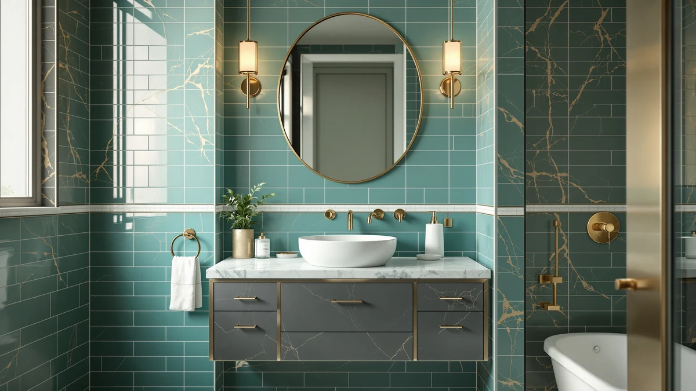

Things to Know Before You Buy
- Vanity width is the number people quote, but depth decides comfort. Most stock vanities run 21 inches deep, and that eats into a narrow room faster than the width does.
- Standard widths cluster at 24, 30, 36, and 48 inches. Measure your wall, then subtract for the door swing and any wall trim before you settle on a size.
- Vanity height ranges from a 32-inch standard to a 36-inch comfort height. Taller people and anyone tired of stooping should size up.
- Find the plumbing rough-in first. Where the drain and supply lines exit the wall or floor decides whether a vanity drops in or turns into a plumbing job.
- Leave 21 inches of clear floor in front, 30 inches if the room allows. That single measurement separates a vanity that fits from one that blocks the door.
This vanity sizing guide exists because a wrong measurement turns a good-looking cabinet into a daily annoyance. You measure the wall, order a 48-inch model, and then the bathroom door catches on the corner or the faucet crowds the backsplash. Getting the numbers right the first time saves you a return shipment and a second lost weekend.
It comes down to four measurements: width, depth, height, and the clearance you leave in front. Most people fix on width and skip the other three, which is where the trouble starts. A 36-inch vanity that fits the wall can still block a door swing, sit too low for a tall household, or land two inches off the drain line.
You do not need a contractor to get this right, but you do need a tape measure and ten quiet minutes. Below, we walk through the standard sizes, the vanity types and how they change the footprint, a step-by-step way to pick your size, the mistakes that cause returns, and how to keep the cabinet solid once it is in. Read it before you buy, not after the box arrives.
What You Need to Know
Sizing a vanity starts with four numbers, and you should write down all four before you shop. Width is the side-to-side measurement and the one manufacturers use to name the product. Depth is front-to-back, usually 21 inches on a stock unit, and it controls how far the cabinet juts into the room. Height runs from the floor to the top of the counter. Clearance is the open floor you keep in front so you can stand and open a drawer.
Standard widths land at 18, 24, 30, 36, 48, 60, and 72 inches. The 30 and 36 inch sizes fit the most homes because they slot into a common alcove and still clear the door. Once you pass 60 inches, you are usually in double-sink territory, which needs a wider wall and a second set of plumbing.
Height has two tiers. The old standard sits at 30 to 32 inches, which suits kids and shorter adults. Comfort height, borrowed from the kitchen, runs 34 to 36 inches and spares taller people the daily stoop. Depth almost always stays at 21 inches, though slim 18-inch cabinets exist for tight rooms and pass-throughs.
The clearance rule is the one people forget. Building codes want at least 21 inches of open floor in front of the vanity, and 30 inches feels far better in daily use. Measure that gap against the toilet, the tub, and the door before you commit to a width.
Types and Categories
The right dimensions shift with the mounting style, so pick the type before you lock the numbers in. A freestanding vanity sits on the floor and hides the plumbing behind a cabinet or legs. It is the forgiving choice: the floor carries the weight, and a toe kick lets you nudge it over a rough-in that sits a little off. This is what most buyers want and what installs fastest.
A floating, or wall-mounted, vanity bolts to the studs and leaves the floor open underneath. It makes a small bathroom read larger and wipes down in seconds, but it needs solid blocking in the wall and a rough-in placed to match. The open space below also trims your storage, so measure what you actually keep under the sink.
Corner vanities tuck into a 90-degree angle and rescue rooms too tight for a flat-wall cabinet. They run smaller inside than the footprint suggests, so treat them as a space-saver, not a storage unit. For a small bathroom, a corner or an 18 to 24 inch wall-mounted piece usually wins.
Then there is single versus double sink. A single sink fits widths from 18 to 48 inches. A double needs at least 60 inches so each basin gets elbow room and the faucets do not crowd. Below 60 inches, two people sharing a double just bump arms.
How to Choose
Work through the measurements in a fixed order and the right cabinet falls out at the end. Start by measuring the wall where the vanity will go, corner to corner, at the height the counter will sit. Do not trust the room to be square, because older homes rarely are. Write that number down.
Next, subtract for everything that steals from that wall. Account for the door swing, any baseboard or trim, a light switch you need to reach, and the clearance to the toilet and tub. A good rule: keep 4 inches of breathing room on the latch side of the door and 15 inches from the vanity center to the nearest side wall or fixture. What remains is your working maximum width.
Then find your plumbing rough-in. Look at where the drain and the hot and cold supply lines exit the wall or floor, and measure their height and their distance from the corner. A freestanding vanity hides small misalignments; a floating one does not. If the numbers do not line up, you are moving pipes, and that changes the budget.
Now set your height. Measure from the floor to your wrist with your arm hanging, then subtract a few inches, or simply choose comfort height at 34 to 36 inches if the household is tall. Finally, match the width you calculated to the nearest standard size and confirm the door still opens fully. If your maximum lands at 34 inches, buy the 30, not the 36.
Common Mistakes to Avoid
Most sizing errors trace back to measuring the width and stopping there. You buy the widest cabinet the wall allows, then the door hits it or the drawers cannot clear the toilet. Always pull the depth and the front clearance before you fall in love with a width.
The second common miss is ignoring the plumbing rough-in. People pick a floating vanity for the look, then discover the drain sits four inches too high to hide inside the slim cabinet. Check the pipe locations against the vanity's interior before you order, not after.
A third trap is forgetting the door swing and the walkway. A 36-inch vanity can fit the wall and still leave you squeezing past it, because the door needs its arc and you need 21 inches to stand. Tape the vanity's outline on the floor and open the door over it to see the real footprint.
People also skip the counter overhang and the faucet reach. The listed width is the cabinet; the top often adds an inch on each side, and a tall faucet can crowd a mirror or a window. Confirm the top dimensions and the faucet hole spacing, since ordering a cabinet-only unit and a mismatched top is the return nobody sees coming.
Care and Maintenance
Right-sizing the vanity is half the job; keeping it solid is the other half. Wipe standing water off the counter and around the faucet base after each use, because moisture is what warps particleboard and lifts laminate at the seams. A dry microfiber cloth takes ten seconds and adds years.
Check the plumbing under the cabinet every few months. Run your hand along the supply lines and the P-trap, and look for a dark ring or a soft spot on the cabinet floor. A slow drip you catch early is a wrench turn; one you miss swells the base and forces a full replacement.
Clean the surfaces with a mild soap and water, and skip bleach or abrasive scrubs on wood and painted finishes, since they strip the sealant that keeps water out. Reseal a natural wood vanity once a year, and touch up any chips in a painted edge so bare board never meets moisture.
Tighten the hardware on a schedule. Cabinet hinges, drawer slides, and the bolts on a wall-mounted vanity all work loose over time, and a floating unit in particular depends on those anchors holding. A quarter turn twice a year keeps doors square and the whole cabinet quiet.
Our Top Picks
Once you have your width and mounting style settled, these three vanities show how the standard sizes play out in real rooms. Each covers a different footprint, from a compact wall to a mid-size bath, so you can match one to the numbers you measured.

Editor's Pick
DELUXE LIVING 36 Inch Bathroom
The 36-inch width is the sweet spot for most single-sink bathrooms, wide enough for real counter space yet still clearing a standard door. This DELUXE LIVING unit ships as a complete vanity with the top and sink, so you skip the mismatched-counter headache.
$319.99
Check Price on Amazon
Best Value
AMERLIFE Sliding Barn Door Bathroom
The sliding barn doors open flat against the cabinet, which buys back the floor a swinging door would need. If your clearance measurement came up tight, this AMERLIFE vanity fits where a standard door front would not.
$239.99
Check Price on Amazon
Premium Choice
LIKIMIO 29.5" Bathroom Vanity with
At 29.5 inches, this LIKIMIO vanity fits a compact bathroom that still needs a full sink and a little drawer storage. It slots into the common 30-inch alcove without crowding the toilet or the walkway.
$238.99
Check Price on AmazonFrequently Asked Questions
What is the standard bathroom vanity size?
A single-sink bathroom vanity most often runs 24, 30, 36, or 48 inches wide, 21 inches deep, and 32 to 36 inches tall. The 30 and 36 inch widths cover the largest share of homes because they fit a standard alcove and still leave room for the door to swing. Depth almost always holds at 21 inches unless you choose a slim 18-inch cabinet for a tight room.
How much clearance do you need in front of a vanity?
Leave at least 21 inches of open floor in front of the vanity so you can stand and open drawers, and building codes treat that as the minimum. Aim for 30 inches when the room allows it, since a swinging door or a second person makes 21 inches feel cramped. Measure that gap against the toilet, the tub, and the door before you settle on a width.
What size vanity fits a small bathroom?
For a small or half bath, an 18 to 24 inch vanity gives you a sink and a little storage without blocking the door or the toilet. A wall-mounted or corner unit frees up floor space and makes a tight room read larger. See our picks for a small bathroom if you are working with a narrow wall.
What is comfort-height for a bathroom vanity?
Comfort height runs 34 to 36 inches from the floor to the top of the counter, borrowed from kitchen cabinets to spare taller people the stoop. The older standard sits at 30 to 32 inches, which suits children and shorter adults. Match the height to the household, and size up if anyone is tall or tired of bending to the sink.
How wide does a double-sink vanity need to be?
Plan on at least 60 inches for a double-sink vanity so each basin gets elbow room and the two faucets do not crowd. Below 60 inches, two people sharing the counter bump arms, and the basins sit too close to use at once. If your wall is under 60 inches, a single wide sink serves you better than a squeezed double. Our guide to the 48-inch double-sink vanity walks through the trade-off.
Verdict
Follow this vanity sizing guide in order and you buy once instead of twice. Measure the wall, subtract for the door swing and the trim, confirm the plumbing rough-in, set your height, then round down to the nearest standard width. The clearance in front matters as much as the width on the wall, so protect that 21 to 30 inches of open floor before anything else. For most single-sink bathrooms the 36-inch DELUXE LIVING vanity hits the balance of counter space and easy fit, while a compact room does better with a 24 to 30 inch cabinet or a wall-mounted piece. Get the four numbers right on paper and the install becomes the easy part.